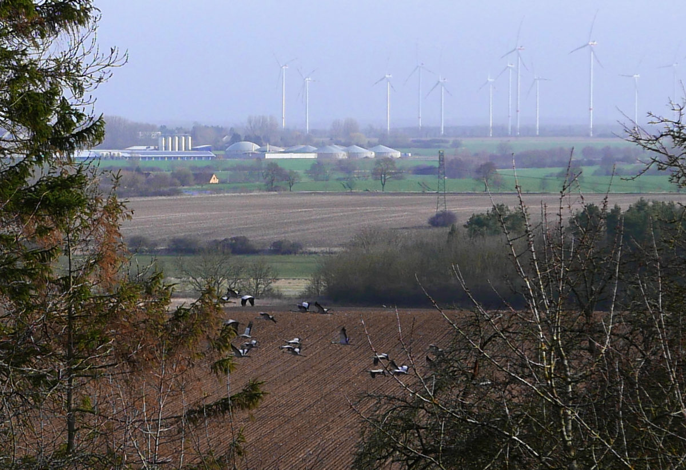

Im Märzen der Bauer...


Zum Weltglückstag kamen Gäste ins ehemalige Heilbad am Tollensetal.Den Frühlingsvollmond um 2.43 Uhr haben sie nicht abgewartet.
Sie wollten am Morgen den Ruf der Kraniche erleben.
Und all ihre Erwartungen wurden übertroffen.
Gut 100 Glücksvögel versammelten sich auf dem Acker zum Trompetenkonzert.
Direkt hinter der Gartenkante im Morgendunst.
Ihre schmetternden Rufe - wunderbar berührend.
Ein krachender Schuss in die pure Idylle. 8.23 Uhr.
Und danach ein wirklich Stummer Frühling.
Einprägsam.
Zwei Tage später, wir fuhren zur Saatgutbörse auf Burg Klempenow,
12 Uhr Mittags: wieder ein Schuss.
Und der Geschäftsführer der Daberkower-Landhof AG fuhr mit seinem Pick Up davon.
Als wir am Abend zurückkamen waren 2 Kinder mit einem Quad auf dem Acker unterwegs.
Kraniche vergrämen - so oder so.
So richtig glücklich ist beides nicht.
Auch wenn etwas Saat gefressen wird.
Kraniche gehören laut Bundesnaturschutzgesetz zu den besonders geschützten Arten.
In Osteuropa gibt es Ausnahmetatbestände bei landwirtschaftlicher Nutzung.
In Westeuropa dagegen werden Ablenkfutterstellen angeboten.
Und am Tollensetal wird im Dunstkreis der Schweinefabrik Güllemais angebaut.
Ernterückstände werden von den Glücksvögeln im Herbst beseitigt.
Was soll aber die Rumballerei im Frühling direkt neben dem Dorf?
Sie wird die Akzeptanz der Agrarwirtschaft bei den Einwohnern und ihren Gästen nicht befördern.
Geht Imagepflege auch nur so oder so?